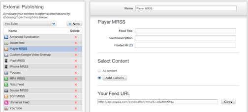

To create a syndication with Player MRSS:

-
Log in to the Backlot UI.
The Backlot UI opens.
-
Open the PUBLISH page.
-
Click the External Publishing subtab.
-
From the list box on the left, select publishing type Player MRSS and click
New.
A new syndication is created.
-
If desired, change the name of the syndication.
-
If desired, change the description of the syndication.
-
In the Hosted At box, enter the root URL from
which your content is served, for example, http://arts.mysite.com or
http://science.theirsite.org.
-
To specify which content is syndicated, if this
syndication is for all your content, click All content.
Otherwise, click Add Labels and select one or more labels.
Changes take effect immediately, and the syndication is created. The feed can be accessed at the URL shown in Your Feed URL.